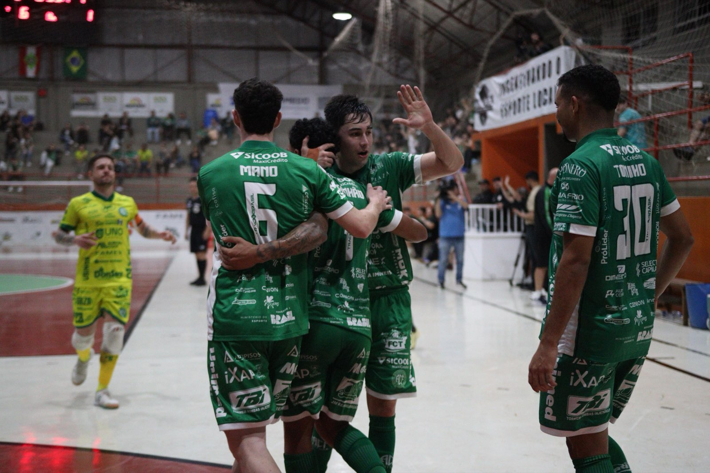

Com um primeiro tempo avassalador, a Prefeitura de Chapecó/Chapecoense/Unochapecó atropelou a ACF/Concórdia por 7 a 2 no clássico do Oeste e se isolou no topo da Série Ouro da Federação Catarinense de Futsal. O Verdão das Quadras comandou as ações desde os primeiros minutos, foi para o intervalo vencendo por 6 a 1 e apenas administrou a vantagem na segunda etapa para carimbar a liderança absoluta da competição.
A Chape Futsal entrou em quadra com uma faixa homenageando Chapecó pelos 109 anos e, para celebrar o aniversário do município, aplicou um verdadeiro atropelo na ACF/Concórdia no primeiro tempo. A avalanche começou logo aos 2’59”, quando Dudi conduziu a bola, limpou a marcação e chutou por entre as pernas do goleiro. Aos 11’49”, Dudi recebeu passe diagonal de Tutu e ampliou. O terceiro veio aos 16’12”, com Samuka escorando assistência de João Camilo após roubada de bola.

Mantendo o ritmo sufocante, Mano recuperou a posse, tabelou com Toninho e guardou aos 17’51”. Logo depois, aos 18’04”, Maranhão soltou a bomba em tiro livre: 5 a 0. O sexto poderia ter vindo aos 19’10”, mas o goleiro Léo pegou pênalti de João Seco. Porém, ele veio aos 12’26”, para fechar o massacre antes do intervalo: Maranhão converteu outra penalidade. O gol selou histórico 6 a 1 nos primeiros 20 minutos que transformou o clássico regional em passeio.
Os visitantes tentaram diminuir na segunda etapa e conseguiram. Aos 5’02”, Gui Pimenta acertou belo chute para estufar a rede. Os anfitriões souberam administrar o placar no restante do confronto, mas sem abdicar de buscar mais gols. O sétimo saiu aos 19’44”: um jogador da ACF cortou mal de cabeça e a bola caiu no pé de Mano, que não desperdiçou. Fim de embate: 7 a 2.
A vitória deixa a Chapecoense com 19 pontos em nove partidas, três a frente do vice-líder Pouso Redondo, que tem o mesmo número de jogos. O próximo desafio da equipe do técnico Leo Schroeder será já neste sábado (29), às 19h30, contra o Catanduvas, fora de casa, pela última rodada da primeira fase da Copa Santa Catarina. O Verdão das Quadras lidera o grupo A.
Crédito das fotos: @rogersilva_fotografia/@achapefutsal